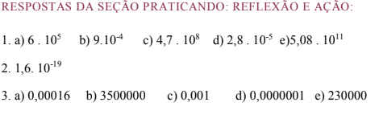

Capítulo 1
A INDÚSTRA METALÚRGICA
Contextualizando
NOTAÇÃO CIENTÍFICA

A indústria metal-mecânica (ou indústria metalomecânica ou metalúrgica) é uma área da indústria dedicada a todos os segmentos responsáveis pela produção e transformação de metais. Compreende os setores de usinagem, estamparia, forjaria, montagem, controle de qualidade, além de outros setores, que dependem da área coberta por uma empresa em particular. A produção de uma peça forjada na metalurgia, percorre um caminho que descreve o fluxo de produção dos metais utilizados na fabricação de objetos presentes no nosso dia a dia, como por exemplo, aqueles em que são utilizados os metais não ferrosos (alumínio) e os ferrosos (aço). Nesse contexto da indústria metalúrgica, são utilizados números tanto para expressar dados, como para trabalhar com grandezas que demandam quantidades muito grandes ou muito pequenas desses metais. Tais quantidades muito grandes ou muito pequenas são representadas por números muito grandes ou números muito pequenos e sua representação exige muitos algarismos.
Como reduzir a escrita de números que apresentam muitos algarismos? (RE)CONSTRUINDO CONHECIMENTOSCaro aluno! Ao longo deste capítulo, vamos estudar a forma reduzida para escrever números que representam valores demasiadamente grandes (200000000000) ou demasiadamente pequenos (0,00000000001). As atividades a seguir vão auxiliar a responder a questão proposta no início do capítulo.
Você vai trabalhar com números muito grandes e números muito pequenos e explorar a notação científica, utilizada para reduzir a escrita de números que apresentam muitos algarismos. A notação científica é uma forma de escrever esses números usando potências de 10.
Números muito pequenos ou muito grandes são frequentemente encontrados nas ciências em geral e na representação das grandezas utilizadas nos processos da indústria, em especial, da indústria metalúrgica, para expressar diferentes grandezas. Escrever números muito grandes ou muito pequenos em notação científica facilita a sua representação.
Acesse o vídeo clicando no link a seguir:
Pode-se escrever um número muito grande como 200000000000 em notação científica, isto é, na forma reduzida, usando a multiplicação de dois fatores, em que um deles é uma potência positiva de 10 com o maior expoente possível, e o outro fator é um dos algarismos:1, 2, 3, 4, 5, 6, 7, 8, ou 9. Assim:

Pode-se, também, escrever um número muito pequeno, como exemplo o número 0,00001, usando a multiplicação de dois fatores em que um deles é uma potência negativa de dez com menor expoente possível e o outro fator é um dos algarismos 1, 2 ,3, 4, 5, 6 ,7 ,8 e 9. Assim,

Comparando a escrita reduzida dos números 200.000.000.000 e 0,00001, você percebe que, na escrita em notação científica, nos dois casos, o 1o fator (um número de 1 a 9, ficou multiplicado por uma potência de 10 positiva, quando o número é muito grande, e negativa, quando o número é muito pequeno).
Veja alguns exemplos:

Para escrever números muito grandes e muito pequenos em notação científica é importante saber escrever as potências indicadas de 10, tanto as positivas como as negativas.

Observe o quadro acima em que estão expostas as potências positivas e as potências negativas de dez. Na primeira linha, você verifica que 100 é igual a 1, pois, todo o número com expoente zero é igual a 1.
Na coluna da esquerda do quadro, estão expressas as potências positivas de dez. Você deve ter observado que cada potência de expoente positivo é igual a 1 seguido de tantos zeros quanto for o expoente. Assim, 103 ( a base 10 no expoente 3) é igual a 1000 e que mil pode ser escrito como 103 . Você deve ter observado, também, que cada potência de expoente negativo é formada por tantas casas decimais depois da vírgula e compostas por tantos zeros seguidos da unidade quanto for o valor do expoente da potência de 10.
Exemplo: 10-7 = 0, 0000001 (7 casas depois da vírgula, seis zeros e a unidade).
Acesse o vídeo clicando no link a seguir:
A seguir, veja o passo a passo para representar números muito grandes ou muito pequenos em notação científica, reduzindo o número de algarismos:
1o Passo: Escreva o número na forma decimal, com apenas um algarismo diferente de 0 na frente da vírgula, andando tantas casas para a esquerda, se o número for muito grande ou para a direita, se o número for muito pequeno.
2o Passo: Depois de andar com a vírgula, verifique se o número aumentou ou diminuiu.
3o Passo Coloque o expoente numa potência de 10 correspondente ao número de casas decimais que você andar com a vírgula. Se ao andar com a vírgula, o valor do número diminuiu, o expoente ficará positivo. Se, ao andar com a vírgula, o valor do número aumentou, o expoente ficará negativo.
4o Passo: Escrever o produto do número formado pelos algarismos diferentes de zero pela potência de 10.
Veja os exemplos a seguir, siga os passos propostos para representar números muito grandes ou muito pequenos em notação científica, reduzindo o número de algarismos.
Veja os exemplos a seguir, siga os passos propostos para representar números muito grandes ou muito pequenos em notação científica, reduzindo o número de algarismos.
1o Passo: "Andar" com a vírgula, colocando-a entre o 3 e o 2, pois desta forma ficaremos apenas com o algarismo 3 antes da vírgula, ficando o número 3,2000.
2o passo: Observamos que, ao andar 4 casas para a esquerda, o número diminuiu ( 3,2000 < 32000).
3o Passo: Nesse caso, 4 positivo será o expoente da potência de 10.
4o Passo: A escrita do número 320000 em notação científica será: 3,2 . 104
Transformar o número 5000000 em notação científica.
1o Passo: "Andar" com a vírgula, colocando-a entre o 5 e o zero pois, desta forma, fica-se apenas com o algarismo 5 antes da vírgula, resultando o número 5, 000000 que é o número natural 5.
2o passo: Observe que, ao andar 6 casas para a esquerda, o número diminuiu, pois 5 é menor do que 5000000 (5 < 5 000 000).
3o Passo Nesse caso, o expoente da potência de 10 será 6 positivo
4o Passo: A escrita do número 5000000 em notação científica será: 5.106


O QUE APRENDI
No contexto da Indústria Metalúrgica, aprendi a escrever números muito grandes ou muito pequenos em notação científica, reduzindo o número de algarismos necessários para representá-los. Para escrever números em notação científica, revisei a escrita das potências indicadas de dez, seguindo o passo a passo proposto ao longo do capítulo.
